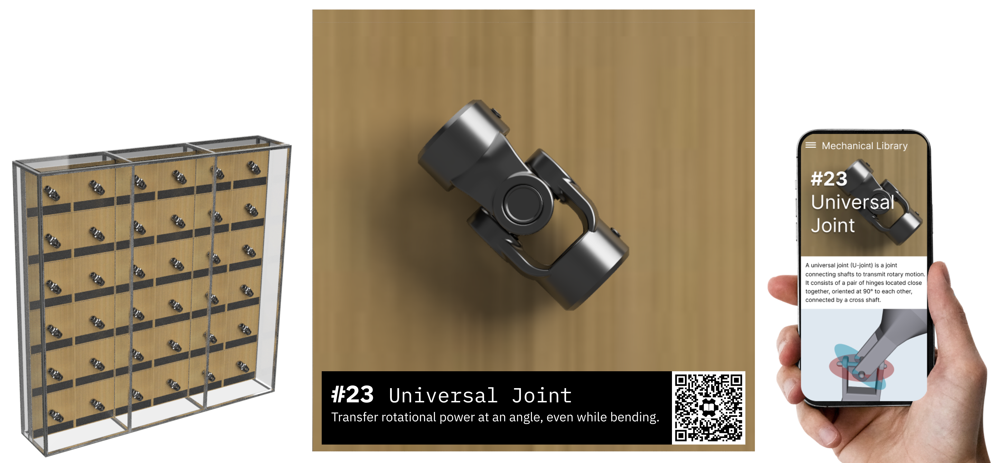

Connecting Physical Mechanisms & Digital Learning
The Mechanical Library shows the mechanisms that make our world work
It includes a “Wall of Mechanisms” museum exhibit of motorized physical models and this website explaining how they work and how they are used. The cabinets will be designed to move to visit schools and museums. We hope to support STEM education by sparking the "engineering mindset" to analyze how things work.
The exhibit is currently in early development, follow @steveTurbek on Instagram See our research and sources page
The Library
Click a mechanism below to learn more, watch videos, see 3D models, make 3D prints, and build Lego models.
In Progress
The Library - Future Elements
#100 Transmitting Power
What is power?
Fluids (hydraulics) & Air pressure (pneumatics)
Ropes & Wires
Belts & Chains
Gears and Screws
Bar Linkages
Compliant mechanisms
#200 Changing Direction
Screws and Worms
Miter and Bevel Gear
Gearless transmission “Elbow” & Spring elbow
#300 Rotary into Linear motion
Rack & Pinion
Slotted Yoke (Scotch Yoke) & Quick Return
Ratchet Pawls & Stops
Slider Crank Mechanism
Crankshaft
Cam & Follower
Cams & Eccentric Drive
Gears that are missing teeth
Geneva Movement
#300 Linear into Rotary motion
Steam & Combustion Piston
#000 Changing gears
Friction & Mechanical clutch
Differential Gear
#900 Different Approaches to Common Problems
Moving around
Reaching an arm
Grabbing an item
Mechanical Library Project Goals
About
The Mechanical Library is being built by Steve Turbek. It is inspired by great engineering teachers and historical books like "507 Mechanical Movements" by Henry T. Brown and the Clark Collection of Mechanical Movement - Boston Museum of Science.
For more information, see research and sources page
Sponsorship / Partnership
Mechanical Library is a non-commercial labor of love. Generous sponsorship by NYCFirst, who provides meaningful and joyful STEM and robotics programming to NYC public school students.
If you would like to become a partner or sponsor, please contact steve (at) turbek.com